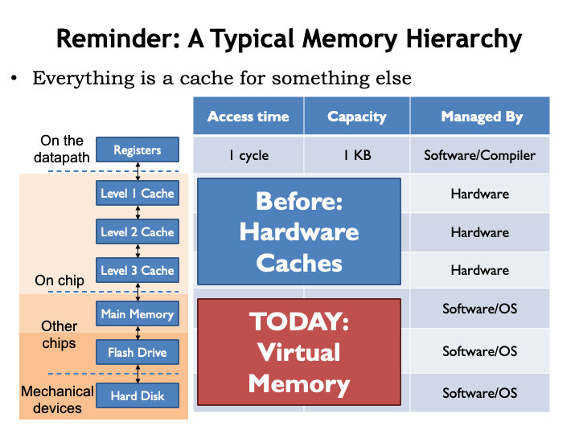

Extending the Memory Hierachy
In this lecture, we return to the memory system that we last discussed in “The Memory Hierarchy”. There we learned about the fundamental tradeoff in current memory technologies: as the memoryʼs capacity increases, so does it access time. It takes some architectural cleverness to build a memory system that has a large capacity and a small average access time. The cleverness is embodied in the cache, a hardware subsystem that lives between the CPU and main memory. Modern CPUs have several levels of cache, where where the modest-capacity first level has an access time close to that of the CPU, and higher levels of cache have slower access times but larger capacities.
Caches give fast access to a small number of memory locations, using associative addressing so that the cache has the ability to hold the contents of the memory locations the CPU is accessing most frequently. The current contents of the cache are managed automatically by the hardware. Caches work well because of the principle of locality: if the CPU accesses location X at time T, itʼs likely to access nearby locations in the not-too-distant future. The cache is organized so that nearby locations can all reside in the cache simultaneously, using a simple indexing scheme to choose which cache location should be checked for a matching address. If the address requested by the CPU resides in the cache, access time is quite fast.
In order to increase the probability that requested addresses reside in the cache, we introduced the notion of associativity, which increased the number of cache locations checked on each access and solved the problem of having, say, instructions and data compete for the same cache locations.
We also discussed appropriate choices for block size (the number of words in a cache line), replacement policy (how to choose which cache line to reuse on a cache miss), and write policy (deciding when to write changed data back to main memory). Weʼll see these same choices again in this lecture as we work to expand the memory hierarchy beyond main memory.

We never discussed where the data in main memory comes from and how the process of filling main memory is managed. Thatʼs the topic of this lecture.
Flash drives and hard disks provide storage options that have more capacity than main memory, with the added benefit of being non-volatile, i.e., they continue to store data even when turned off. The generic name for these new devices is secondary storage, where data will reside until itʼs moved to primary storage, i.e., main memory, for use. So when we first turn on a computer system, all of it s data will be found in secondary storage, which weʼll think of as the final level of our memory hierarchy.
As we think about the right memory architecture, weʼll build on the ideas from our previous discussion of caches, and, indeed, think of main memory as another level of cache for the permanent, high-capacity secondary storage. Weʼll be building what we call a virtual memory system, which, like caches, will automatically move data from secondary storage into main memory as needed. The virtual memory system will also let us control what data can be accessed by the program, serving as a stepping stone to building a system that can securely run many programs on a single CPU.
Letʼs get started!
Here we see the cache and main memory, the two components of our memory system as developed in the lecture on “Memory Hierarchy”. And hereʼs our new secondary storage layer. The good news: the capacity of secondary storage is huge! Even the most modest modern computer system will have 100ʼs of gigabytes of secondary storage and having a terabyte or two is not uncommon on medium-size desktop computers. Secondary storage for the cloud can grow to many petabytes (a petabyte is $10^{15}$ bytes or a million gigabytes).
The bad news: disk access times are 100,000 times longer that those of DRAM. So the change in access time from DRAM to disk is much, much larger than the change from caches to DRAM.
When looking at DRAM timing, we discovered that the additional access time for retrieving a contiguous block of words was small compared to the access time for the first word, so fetching a block was the right plan assuming weʼd eventually access the additional words. For disks, the access time difference between the first word and successive words is even more dramatic. So, not surprisingly, weʼll be reading fairly large blocks of data from disk.
The consequence of the much, much larger secondary-storage access time is that it will be very time consuming to access disk if the data we need is not in main memory. So we need to design our virtual memory system to minimize misses when accessing main memory. A miss, and the subsequent disk access, will have a huge impact on the average memory access time, so the miss rate will need to be very, very, small compared to, say, the rate of executing instructions.
Given the enormous miss penalties of secondary storage, what does that tell us about how it should be used as part of our memory hierarchy?
We will need high associativity, i.e., we need a great deal of flexibility on how data from disk can be located in main memory. In other words, if our working set of memory accesses fit in main memory, our virtual memory system should make that possible, avoiding unnecessary collisions between accesses to one block of data and another.
Weʼll want to use a large block size to take advantage of the low incremental cost of reading successive words from disk. And, given the principle of locality, weʼd expect to be accessing other words of the block, thus amortizing the cost of the miss over many future hits.
Finally, weʼll want to use a write-back strategy where weʼll only update the contents of disk when data thatʼs changed in main memory needs to be replaced by data from other blocks of secondary storage.
There is upside to misses having such long latencies. We can manage the organization of main memory and the accesses to secondary storage in software. Even it takes 1000ʼs of instructions to deal with the consequences of a miss, executing those instructions is quick compared to the access time of a disk. So our strategy will be to handle hits in hardware and misses in software. This will lead to simple memory management hardware and the possibility of using very clever strategies implemented in software to figure out what to do on misses.
Hereʼs how our virtual memory system will work. The memory addresses generated by the CPU are called virtual addresses to distinguish them from the physical addresses used by main memory. In between the CPU and main memory thereʼs a new piece of hardware called the memory management unit (MMU). The MMUʼs job is to translate virtual addresses to physical addresses.
“But wait!” you say. “Doesnʼt the cache go between the CPU and main memory?” Youʼre right and at the end of this lecture weʼll talk about how to use both an MMU and a cache. But for now, letʼs assume thereʼs only an MMU and no cache.
The MMU hardware translates virtual addresses to physical addresses using a simple table lookup. This table is called the page map or page table. Conceptually, the MMU uses the virtual address as index to select an entry in the table, which tells us the corresponding physical address. The table allows a particular virtual address to be found anywhere in main memory. In normal operation weʼd want to ensure that two virtual addresses donʼt map to the same physical address. But it would be okay if some of the virtual addresses did not have a translation to a physical address. This would indicate that the contents of the requested virtual address havenʼt yet been loaded into main memory, so the MMU would signal a memory-management exception to the CPU, which could assign a location in physical memory and perform the required I/O operation to initialize that location from secondary storage.
The MMU table gives the system a lot of control over how physical memory is accessed by the program running on the CPU. For example, we could arrange to run multiple programs in quick succession (a technique called time sharing) by changing the page map when we change programs. Main memory locations accessible to one program could be made inaccessible to another program by proper management of their respective page maps. And we could use memory-management exceptions to load program contents into main memory on demand instead of having to load the entire program before execution starts. In fact, we only need to ensure the current working set of a program is actually resident in main memory. Locations not currently being used could live in secondary storage until needed. In this lecture and next, weʼll see how the MMU plays a central role in the design of a modern timesharing computer system.
Of course, weʼd need an impossibly large table to separately map each virtual address to a physical address. So instead we divide both the virtual and physical address spaces into fixed-sized blocks, called pages. Page sizes are always a power-of-2 bytes, say $2^p$ bytes, so p is the number address bits needed to select a particular location on the page. Weʼll the use low-order p bits of the virtual or physical address as the page offset. The remaining address bits tell us which page is being accessed and are called the page number.
A typical page size is 4KB to 16KB, which correspond to p=12 and p=14 respectively. Suppose p=12. So if the CPU produces a 32-bit virtual address, the low-order 12 bits of the virtual address are the page offset and the high-order 20 bits are the virtual page number. Similarly, the low-order p bits of the physical address are the page offset and the remaining physical address bits are the physical page number.
The key idea is that the MMU will manage pages, not individual locations. Weʼll move entire pages from secondary storage into main memory. By the principal of locality, if a program access one location on a page, we expect it will soon access other nearby locations. By choosing the page offset from the low-order address bits, weʼll ensure that nearby locations live on the same page (unless of course weʼre near one end of the page or the other). So pages naturally capture the notion of locality. And since pages are large, by dealing with pages when accessing secondary storage, weʼll take advantage that reading or writing many locations is only slightly more time consuming than accessing the first location.
The MMU will map virtual page numbers to physical page numbers. It does this by using the virtual page number (VPN) as an index into the page table. Each entry in the page table indicates if the page is resident in main memory and, if it is, provides the appropriate physical page number (PPN). The PPN is combined with the page offset to form the physical address for main memory.
If the requested virtual page is NOT resident in main memory, the MMU signals a memory-management exception, called a page fault, to the CPU so it can load the appropriate page from secondary storage and set up the appropriate mapping in the MMU.
Our plan to use main memory as page cache is called paging or sometimes demand paging since movements of pages to and from secondary storage is determined by the demands of the program.
So hereʼs the plan. Initially all the virtual pages for a program reside in secondary storage and the MMU is empty, i.e., there are no pages resident in physical memory.
The CPU starts running the program and each virtual address it generates, either for an instruction fetch or data access, is passed to the MMU to be mapped to a physical address in main memory.
If the virtual address is resident in physical memory, the main memory hardware can complete the access.
If the virtual address in NOT resident in physical memory, the MMU signals a page fault exception, forcing the CPU to switch execution to special code called the page fault handler. The handler allocates a physical page to hold the requested virtual page and loads the virtual page from secondary storage into main memory. It then adjusts the page map entry for the requested virtual page to show that it is now resident and to indicate the physical page number for the newly allocated and initialized physical page.
When trying to allocate a physical page, the handler may discover that all physical pages are currently in use. In this case it chooses an existing page to replace, e.g., a resident virtual page that hasnʼt been recently accessed. It swaps the contents of the chosen virtual page out to secondary storage and updates the page map entry for the replaced virtual page to indicate it is no longer resident. Now thereʼs a free physical page to re-use to hold the contents of the virtual page that was missing.
The working set of the program, i.e., the set of pages the program is currently accessing, is loaded into main memory through a series of page faults. After a flurry of page faults when the program starts running, the working set changes slowly, so the frequency of page faults drops dramatically, perhaps close to zero if the program is small and well-behaved. It is possible to write programs that constantly generate page faults, a phenomenon called thrashing. Given the long access times of secondary storage, a program thatʼs thrashing runs very slowly, usually so slowly that userʼs give up and rewrite the program to behave more sensibly.
The design of the page map is straightforward. Thereʼs one entry in the page map for each virtual page. For example, if the CPU generates a 32-bit virtual address and the page size is $2^{12}$ bytes, the virtual page number has $32-12 = 20$ bits and the page table will have $2^{20}$ entries.
Each entry in the page table contains a resident bit (R) which is set to 1 when the virtual page is resident in physical memory. If R is 0, an access to that virtual page will cause a page fault. If R is 1, the entry also contains the PPN, indicating where to find the virtual page in main memory.
Thereʼs one additional state bit called the dirty bit (D). When a page has just been loaded from secondary storage, itʼs clean, i.e, the contents of physical memory match the contents of the page in secondary storage. So the D bit is set to 0. If subsequently the CPU stores into a location on the page, the D bit for the page is set to 1, indicating the page is dirty, i.e., the contents of memory now differ from the contents of secondary storage. If a dirty page is ever chosen for replacement, its contents must be written to secondary storage in order to save the changes before the page gets reused.
Some MMUs have additional state bits in each page table entry. For example, there could be a read-only bit which, when set, would generate an exception if the program attempts to store into the page. This would be useful for protecting code pages from accidentally being corrupted by errant data accesses, a very handy debugging feature.
Hereʼs an example of the MMU in action. To make things simple, assume that the virtual address is 12 bits, consisting of an 8-bit page offset and a 4-bit virtual page number. So there are $2^4 = 16$ virtual pages. The physical address is 11 bits, divided into the same 8-bit page offset and a 3-bit physical page number. So there are $2^3 = 8$ physical pages.
On the left we see a diagram showing the contents of the 16-entry page map, i.e., an entry for each virtual page. Each page table entry includes a dirty bit (D), a resident bit (R) and a 3-bit physical page number, for a total of 5 bits. So the page map has 16 entries, each with 5-bits, for a total of 16*5 = 80 bits. The first entry in the table is for virtual page 0, the second entry for virtual page 1, and so on.
In the middle of the slide thereʼs a diagram of physical memory showing the 8 physical pages. The annotation for each physical page shows the virtual page number of its contents. Note that thereʼs no particular order to how virtual pages are stored in physical memory — which page holds what is determined by which pages are free at the time of a page fault. In general, after the program has run for a while, weʼd expected to find the sort of jumbled ordering we see here.
Letʼs follow along as the MMU handles the request for virtual address 0x2C8, generated by the execution of the LD instruction shown here. Splitting the virtual address into page number and offset, we see that the VPN is 2 and the offset is 0xC8. Looking at the page map entry with index 2, we see that the R bit is 1, indicating that virtual page 2 is resident in physical memory. The PPN field of entry tells us that virtual page 2 can be found in physical page 4.
Combining the PPN with the 8-bit offset, we find that the contents of virtual address 0x2C8 can be found in main memory location 0x4C8. Note that the offset is unchanged by the translation process — the offset into the physical page is always the same as the offset into the virtual page.
Building the MMU
Letʼs review what happens when the CPU accesses a non-resident virtual page, i.e., a page with its resident bit set to 0. In the example shown here, the CPU is trying to access virtual page 5.
In this case, the MMU signals a page fault exception, causing the CPU to suspend execution of the program and switch to the page fault handler, which is code that deals with the page fault. The handler starts by either finding an unused physical page or, if necessary, creating an unused page by selecting an in-use page and making it available. In our example, the handler has chosen virtual page 1 for reuse. If the selected page is dirty, i.e., its D bit is 1 indicating that its contents have changed since being read from secondary storage, write it back to secondary storage. Finally, mark the selected virtual page as no longer resident. In the “after” figure, we see that the R bit for virtual page 1 has been set to 0. Now physical page 4 is available for re-use.
Are there any restrictions on which page we can select? Obviously, we canʼt select the page that holds the code for the page fault handler. Pages immune from selection are called wired pages. And it would very inefficient to choose the page that holds the code that made the initial memory access, since we expect to start executing that code as soon as we finish handling the page fault.
The optimal strategy would be to choose the page whose next use will occur farthest in the future. But, of course, this involves knowledge of future execution paths and so isnʼt a realizable strategy. Wikipedia provides a nice description of the many strategies for choosing a replacement page, with their various tradeoffs between ease of implementation and impact on the rate of page faults — see the URL given at the bottom of the slide. The aging algorithm they describe is frequently used since it offers near optimal performance at a moderate implementation cost.
Next, the desired virtual page is read from secondary storage into the selected physical page. In our example, virtual page 5 is now loaded into physical page 4.
Then the R bit and PPN fields in the page table entry for virtual page 5 are updated to indicate that the contents of that virtual page now reside in physical page 4.
Finally the handler is finished and execution of the original program is resumed, re-executing the instruction that caused the page fault. Since the page map has been updated, this time the access succeeds and execution continues.
To double-check our understanding of page faults, letʼs run through an example. Hereʼs the same setup as in our previous example, but this time consider a store instruction thatʼs making an access to virtual address 0x600, which is located on virtual page 6.
Checking the page table entry for VPN 6, we see that its R bit 0 indicating that it is NOT resident in main memory, which causes a page fault exception.
The page fault handler selects VPN 0xE for replacement since weʼve been told in the setup that itʼs the least-recently-used page.
The page table entry for VPN 0xE has D=1 so the handler writes the contents of VPN 0xE, which is found in PPN 0x5, to secondary storage. Then it updates the page table to indicate that VPN 0xE is no longer resident.
Next, the contents of VPN 0x6 are read from secondary storage into the now available PPN 0x5.
Now the handler updates the page table entry for VPN 0x6 to indicate that itʼs resident in PPN 0x5.
The page fault handler has completed its work, so program execution resumes and the ST instruction is re-executed. This time the MMU is able to translate virtual address 0x600 to physical address 0x500. And since the ST instruction modifies the contents of VPN 0x6, itʼs D bit is set to 1.
Whew! Weʼre done :)
We can think of the work of the MMU as being divided into two tasks, which as computer scientists, we would think of as two procedures. In this formulation the information in the page map is held in several arrays: the R array holds the resident bits, the D array holds the dirty bits, the PPN array holds the physical page numbers, and the DiskAdr array holds the location in secondary storage for each virtual page.
The VtoP procedure is invoked on each memory access to translate the virtual address into a physical address. If the requested virtual page is not resident, the PageFault procedure is invoked to make the page resident. Once the requested page is resident, the VPN is used as an index to lookup the corresponding PPN, which is then concatenated with the page offset to form the physical address.
The PageFault routine starts by selecting a virtual page to be replaced, writing out its contents if itʼs dirty. The selected page is then marked as not resident.
Finally the desired virtual page is read from secondary storage and the page map information updated to reflect that itʼs now resident in the newly filled physical page.
Weʼll use hardware to implement the VtoP functionality since itʼs needed for every memory access. The call to the PageFault procedure is accomplished via a page fault exception, which directs the CPU to execute the appropriate handler software that contains the PageFault procedure.
This is a good strategy to pursue in all our implementation choices: use hardware for the operations that need to be fast, but use exceptions to handle the (hopefully infrequent) exceptional cases in software. Since the software is executed by the CPU, which is itself a piece of hardware, what weʼre really doing is making the tradeoff between using special-purpose hardware (e.g., the MMU) or using general-purpose hardware (e.g., the CPU). In general, one should be skeptical of proposals to use special-purpose hardware, reserving that choice for operations that truly are commonplace and whose performance is critical to the overall performance of the system.
There are three architectural parameters that characterize a virtual memory system and hence the architecture of the MMU.
P is the number of address bits used for the page offset in both virtual and physical addresses. V is the number of address bits used for the virtual page number. And M is the number of address bits used for the physical page number. All the other parameters, listed on the right, are derived from these three parameters.
As mentioned earlier, the typical page size is between 4KB and 16KB, the sweet spot in the tradeoff between the downside of using physical memory to hold unwanted locations and the upside of reading as much as possible from secondary storage so as to amortize the high cost of accessing the initial word over as many words as possible.
The size of the virtual address is determined by the ISA. Weʼre now making the transition from 32-bit architectures, which support a 4 gigabyte virtual address space, to 64-bit architectures, which support a 16 exabyte virtual address space. “Exa” is the SI prefix for $10^{18}$ - a 64-bit address can access a lot of memory!
The limitations of a small virtual address have been the main cause for the extinction of many ISAs. Of course, each generation of engineers thinks that the transition they make will be the final one! I can remember when we all thought that 32 bits was an unimaginably large address. Back then weʼre buying memory by the megabyte and only in our fantasies did we think one could have a system with several thousand megabytes. Todayʼs CPU architects are feeling pretty smug about 64 bits — weʼll see how they feel in a couple of decades!
The size of physical addresses is currently between 30 bits (for embedded processors with modest memory needs) and 40+ bits (for servers that handle large data sets). Since CPU implementations are expected to change every couple of years, the choice of physical memory size can be adjusted to match current technologies. Since programmers use virtual addresses, theyʼre insulated from this implementation choice. The MMU ensures that existing software will continue to function correctly with different sizes of physical memory. The programmer may notice differences in performance, but not in basic functionality.
For example, suppose our system supported a 32-bit virtual address, a 30-bit physical address and a 4KB page size. So $p = 12$, $v = 32-12 = 20$, and $m = 30 — 12 = 18$.
There are $2^m$ physical pages, which is $2^{18}$ in our example.
There are $2^v$ virtual pages, which is $2^{20}$ in our example.
And since there is one entry in the page map for each virtual page, there are $2^{20}$ (approximately one million) page map entries.
Each page map entry contains a PPN, an R bit and a D bit, for a total of m+2 bits, which is 20 bits in our example. So there are approximately 20 million bits in the page map.
If we were thinking of using a large special-purpose static RAM to hold the page map, this would get pretty expensive!
But why use a special-purpose memory for the page map? Why not use a portion of main memory, which we have a lot of and have already bought and paid for!
We could use a register, called the page map pointer, to hold the address of the page map array in main memory. In other words, the page map would occupy some number of dedicated physical pages. Using the desired virtual page number as an index, the hardware could perform the usual array access calculation to fetch the needed page map entry from main memory.
The downside of this proposed implementation is that it now takes two accesses to physical memory to perform one virtual access: the first to retrieve the page table entry needed for the virtual-to-physical address translation, and the second to actually access the requested location.
Once again, caches to the rescue. Most systems incorporate a special-purpose cache, called a translation look-aside buffer (TLB), that maps virtual page numbers to physical page numbers. The TLB is usually small and quite fast. Itʼs usually fully-associative to ensure the best possible hit ratio by avoiding collisions. If the PPN is found by using the TLB, the access to main memory for the page table entry can be avoided, and weʼre back to a single physical access for each virtual access.
The hit ratio of a TLB is quite high, usually better than 99%. This isnʼt too surprising since locality and the notion of a working set suggest that only a small number of pages are in active use over short periods of time.
As weʼll see in a few slides, there are interesting variations to this simple TLB page-map-in-main-memory architecture. But the basic strategy will remain the same.
Putting it all together: the virtual address generated by the CPU is first processed by the TLB to see if the appropriate translation from VPN to PPN has been cached. If so, the main memory access can proceed directly.
If the desired mapping is not in the TLB, the appropriate entry in the page map is accessed in main memory. If the page is resident, the PPN field of the page map entry is used to complete the address translation. And, of course, the translation is cached in the TLB so that subsequent accesses to this page can avoid the access to the page map.
If the desired page is not resident, the MMU triggers a page fault exception and the page fault handler code will deal with the problem.
Hereʼs a final example showing all the pieces in action. In this example, $p = 10$, $v = 22$, and $m = 14$.
How many pages can reside in physical memory at one time? There are $2^m$ physical pages, so $2^{14}$.
How many entries are there in the page table? Thereʼs one entry for each virtual page and there are $2^v$ virtual pages, so there are $2^{22}$ entries in the page table.
How many bits per entry in the page table? Assume each entry holds the PPN, the resident bit, and the dirty bit. Since the PPN is m bits, there are $m+2$ bits in each entry, so 16 bits.
How many pages does the page table occupy? There are $2^v$ page table entries, each occupying $(m+2)/8$ bytes, so the total size of the page table in this example is $2^{23}$ bytes. Each page holds $2^p = 2^10$ bytes, so the page table occupies $2^{23}/2^{10} = 2^{13}$ pages.
What fraction of virtual memory can be resident at any given time? There are $2^v$ virtual pages, of which $2^m$ can be resident. So the fraction of resident pages is $2^m/2^v = 2^{14}/2^{22} = 1/2^8$.
What is the physical address for virtual address 0x1804? Which MMU components are involved in the translation? First we have have decompose the virtual address into VPN and offset. The offset is the low-order 10 bits, so is 0x004 in this example. The VPN is the remaining address bits, so the VPN is 0x6. Looking first in the TLB, we that the VPN-to-PPN mapping for VPN 0x6 is cached, so we can construct the physical address by concatenating the PPN (0x2) with the 10-bit offset (0x4) to get a physical address of 0x804. Youʼre right! Itʼs a bit of pain to do all the bit manipulations when p is not a multiple of 4.
How about virtual address 0x1080? For this address the VPN is 0x4 and the offset is 0x80. The translation for VPN 0x4 is not cached in the TLB, so we have to check the page map, which tells us that the page is resident in physical page 5. Concatenating the PPN and offset, we get 0x1480 as the physical address.
Finally, how about virtual address 0x0FC? Here the VPN is 0 and the offset 0xFC. The mapping for VPN 0 is not found in the TLB and checking the page map reveals that VPN 0 is not resident in main memory, so a page fault exception is triggered.
There are a few things to note about the example TLB and page map contents. Note that a TLB entry can be invalid (itʼs R bit is 0). This can happen when a virtual page is replaced, so when we change the R bit to 0 in the page map, we have to do the same in the TLB. And should we be concerned that PPN 0x5 appears twice in the page table? Note that the entry for VPN 0x3 doesnʼt matter since itʼs R bit is 0. Typically when marking a page not resident, we donʼt bother to clear out the other fields in the entry since they wonʼt be used when R=0. So thereʼs only one valid mapping to PPN 5.
Contexts
The page map provides the context for interpreting virtual addresses, i.e., it provides the information needed to correctly determine where to find a virtual address in main memory or secondary storage.
Several programs may be simultaneously loaded into main memory, each with its own context. Note that the separate contexts ensure that the programs donʼt interfere which each other. For example, the physical location for virtual address 0 in one program will be different than the physical location for virtual address 0 in another program. Each program operates independently in its own virtual address space. Itʼs the context provided by the page map that allows them to coexist and share a common physical memory. So we need to switch contexts when switching programs. This is accomplished by reloading the page map.
In a timesharing system, the CPU will periodically switch from running one program to another, giving the illusion that multiple programs are each running on their own virtual machine. This is accomplished by switching contexts when switching the CPU state to the next program.
Thereʼs a privileged set of code called the operating system (OS) that manages the sharing of one physical processor and main memory amongst many programs, each with its own CPU state and virtual address space. The OS is effectively creating many virtual machines and choreographing their execution using a single set of shared physical resources.
The OS runs in a special OS context, which we call the kernel. The OS contains the necessary exception handlers and timesharing support. Since it has to manage physical memory, itʼs allowed to access any physical location as it deals with page faults, etc. Exceptions in running programs cause the hardware to switch to the kernel context, which we call entering kernel mode. After the exception handling is complete, execution of the program resumes in what we call user mode.
Since the OS runs in kernel mode it has privileged access to many hardware registers that are inaccessible in user mode. These include the MMU state, I/O devices, and so on. User-mode programs that need to access, say, the disk, need to make a request to the OS kernel to perform the operation, giving the OS the chance to vet the request for appropriate permissions, etc. Weʼll see how all of this works in an upcoming lecture.
User-mode programs (aka applications) are written as if they have access to the entire virtual address space. They often obey the same conventions such as the address of the first instruction in the program, the initial value for the stack pointer, etc. Since all these virtual addresses are interpreted using the current context, by controlling the contexts the OS can ensure that the programs can coexist without conflict.
The diagram on the right shows a standard plan for organizing the virtual address space of an application. Typically the first virtual page is made inaccessible, which helps catch errors involving references to initialized (i.e., zero-valued) pointers. Then come some number of read-only pages that hold the applicationʼs code and perhaps the code from any shared libraries it uses. Marking code pages as read-only avoids hard-to-find bugs where errant data accesses inadvertently change the program!
Then there are read-write pages holding the applicationʼs statically allocated data structures. The rest of the virtual address space is divided between two data regions that can grow over time. The first is the applicationʼs stack, used to hold procedure activation records. Here we show it located at the lower end of the virtual address space since our convention is that the stack grows towards higher addresses.
The other growable region is the heap, used when dynamically allocating storage for long-lived data structures. “Dynamically” means that the allocation and deallocation of objects is done by explicit procedure calls while the application is running. In other words, we donʼt know which objects will be created until the program actually executes. As shown here, as the heap expands it grows towards lower addresses.
The page fault handler knows to allocate new pages when these regions grow. Of course, if they ever meet somewhere in the middle and more space is needed, the application is out of luck — itʼs run out of virtual memory!

There are a few MMU implementation details we can tweak for more efficiency or functionality.
In our simple page-map implementation, the full page map occupies some number of physical pages. Using the numbers shown here, if each entry in the page map occupies one word of main memory, weʼd need $2^{20}$ words (or $2^{10}$ pages) to hold the page table. If we have multiple contexts, we would need multiple page tables, and the demands on our physical memory resources would start to get large.
The MMU implementation shown here uses a hierarchical page map. The top 10 bits of virtual address are used to access a page directory, which indicates the physical page that holds the page map for that segment of the virtual address space. The key idea is that the page map segments are in virtual memory, i.e., they donʼt all have to be resident at any given time. If the running application is only actively using a small portion of its virtual address space, we may only need a handful of pages to hold the page directory and the necessary page map segments. The resultant savings really add up when there are many applications, each with their own context.
In this example, note that the middle entries in the page directory, i.e., the entries corresponding to the as-yet unallocated virtual memory between the stack and heap, are all marked as not resident. So no page map resources need be devoted to holding a zillion page map entries all marked “not resident”.
Accessing the page map now requires two access to main memory (first to the page directory, then to the appropriate segment of the page map), but the TLB makes the impact of that additional access negligible.
Normally when changing contexts, the OS would reload the page-table pointer to point to the appropriate page table (or page table directory if we adopt the scheme from the previous slide). Since this context switch in effect changes all the entries in the page table, the OS would also have to invalidate all the entries in the TLB cache. This naturally has a huge impact on the TLB hit ratio and the average memory access time takes a huge hit because of the all page map accesses that are now necessary until the TLB is refilled.
To reduce the impact of context switches, some MMUs include a context-number register whose contents are concatenated with the virtual page number to form the query to the TLB. Essentially this means that the tag field in the TLB cache entries will expand to include the context number provided at the time the TLB entry was filled.
To switch contexts, the OS would now reload both the context-number register and the page-table pointer. With a new context number, entries in the TLB for other contexts would no longer match, so no need to flush the TLB on a context switch. If the TLB has sufficient capacity to cache the VPN-to-PPN mappings for several contexts, context switches would no longer have a substantial impact on average memory access time.
Summary
Finally, letʼs return to the question about how to incorporate both a cache and an MMU into our memory system.
The first choice is to place the cache between the CPU and the MMU, i.e., the cache would work on virtual addresses. This seems good: the cost of the VPN-to-PPN translation is only incurred on a cache miss. The difficulty comes when thereʼs a context switch, which changes the effective contents of virtual memory. After all that was the point of the context switch, since we want to switch execution to another program. But that means the OS would have to invalidate all the entries in the cache when performing a context switch, which makes the cache miss ratio quite large until the cache is refilled. So once again the performance impact of a context switch would be quite high.
We can solve this problem by caching physical addresses, i.e., placing the cache between the MMU and main memory. Thus the contents of the cache are unaffected by context switches — the requested physical addresses will be different, but the cache handles that in due course. The downside of this approach is that we have to incur the cost of the MMU translation before we can start the cache access, slightly increasing the average memory access time.
But if weʼre clever we donʼt have to wait for the MMU to finish before starting the access to the cache. To get started, the cache needs the line number from the virtual address in order to fetch the appropriate cache line. If the address bits used for the line number are completely contained in the page offset of the virtual address, those bits are unaffected by the MMU translation, and so the cache lookup can happen in parallel with the MMU operation.
Once the cache lookup is complete, the tag field of the cache line can be compared with the appropriate bits of the physical address produced by the MMU. If there was a TLB hit in the MMU, the physical address should be available at about the same time as the tag field produced by the cache lookup.
By performing the MMU translation and cache lookup in parallel, thereʼs usually no impact on the average memory access time! Voila, the best of both worlds: a physically addressed cache that incurs no time penalty for MMU translation.
One final detail: one way to increase the capacity of the cache is to increase the number of cache lines and hence the number of bits of address used as the line number. Since we want the line number to fit into the page offset field of the virtual address, weʼre limited in how many cache lines we can have. The same argument applies to increasing the block size. So to increase the capacity of the cache our only option is to increase the cache associativity, which adds capacity without affecting the address bits used for the line number.
Thatʼs it for our discussion of virtual memory. We use the MMU to provide the context for mapping virtual addresses to physical addresses. By switching contexts we can create the illusion of many virtual address spaces, so many programs can share a single CPU and physical memory without interfering with each other.
We discussed using a page map to translate virtual page numbers to physical page numbers. To save costs, we located the page map in physical memory and used a TLB to eliminate the cost of accessing the page map for most virtual memory accesses. Access to a non-resident page causes a page fault exception, allowing the OS to manage the complexities of equitably sharing physical memory across many applications.
We saw that providing contexts was the first step towards creating virtual machines, which is the topic of our next lecture.